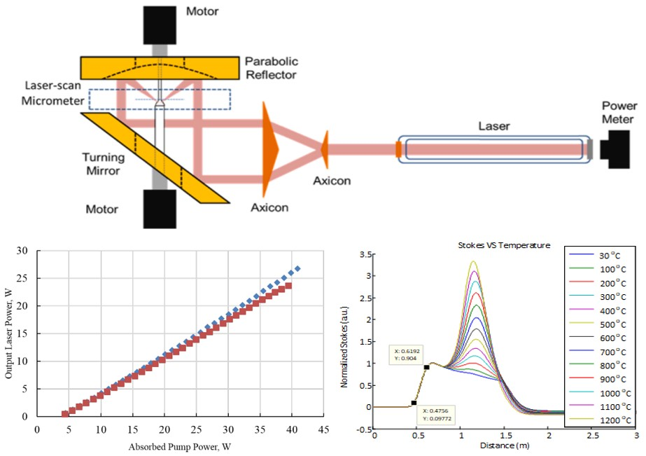
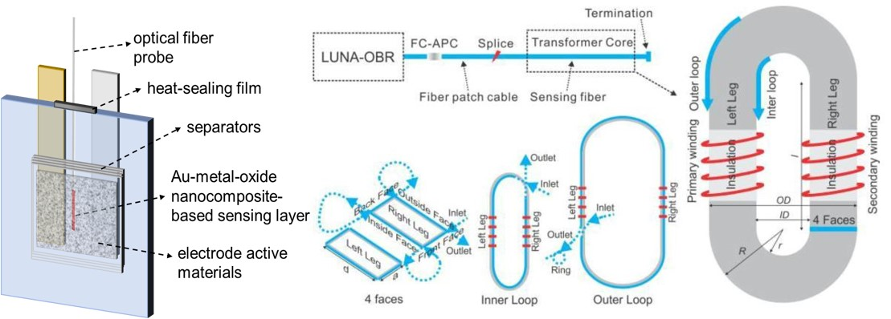
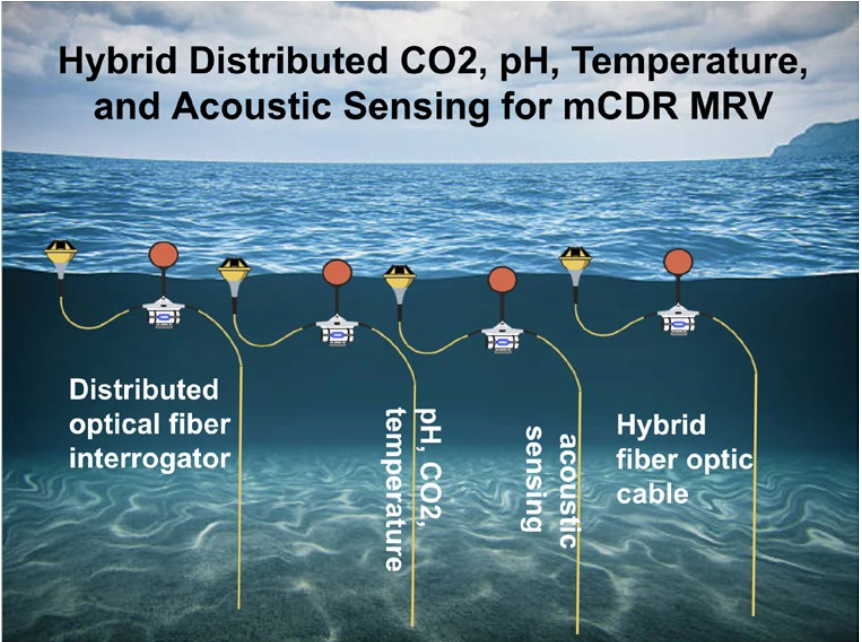
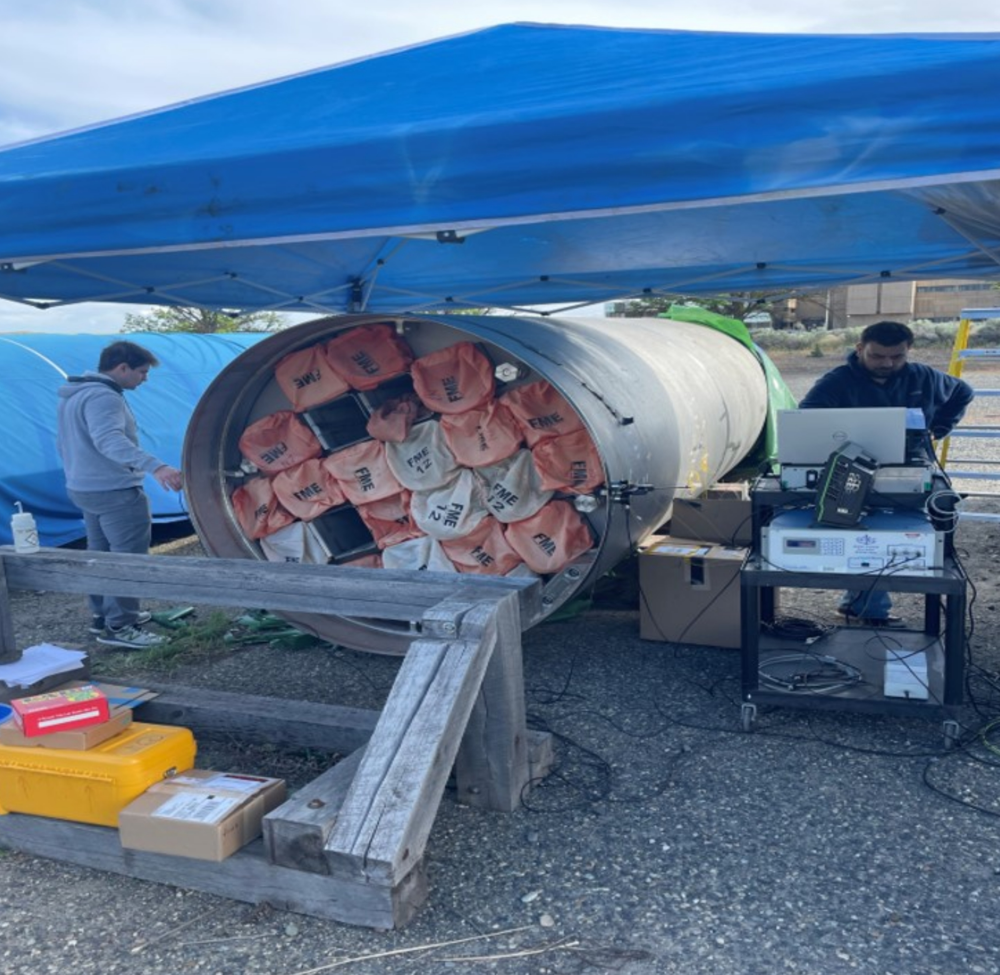

Research
Fiber Optic Sensors

Research

Single crystal fiber and single crystal derived fiber are promising candidates for next generation high power laser and telecommunication. Particular interests have rising in which single crystal fiber materials are being leveraged for high-value sensing elements in harsh-environment applications, particularly in energy sectors.
We have established an effort to grow customized optical fibers include single crystal fiber, glass fiber, and plastic fiber, using Laser Heated Pedestal Growth (LHPG) system. It will also be utilized to grow custom fibers with different diameter range (50 µm-1mm) and different dopants and concentrations that are not commercially available. We also explore various cladding technique for the single crystal fiber.

Monitoring the internal states of batteries ranging from cell to pack and stack level to extend lifetime and prevent thermal runaway due to cell degradation has been an essential task for Battery Management Systems (BMS). Our study aims to embed both existing and newly developed low-cost fiber optic sensors internal to Li-ion pouch cells for extraction of critical operational information about the cell state-of-health (SOH) and performance. This is done either by attaching them onto the cell surface with epoxy or by embedding them in between two separators central to cell internal structure, the latter expected to be the most informative area to measure from. Potential parameters of interest include internal temperature, strain, acoustic emission and CO2/ O2 concentration.
Given that the state-of-charge (SOC) of a battery is a function of cell temperature, the locally-measured temperature serves as input to the SOC estimation algorithm for general cell operation, while the temperature gradient measured by Raman-based distributed FO sensors indicates the temperature hot spots for incipient thermal runaway detection. And the strain variation is correlated with electrode intercalation stages and charge/discharge capacity fade, which can then be used to estimate both SOC and SOH of the battery. Rather than relying on estimation methods, the cell SOC can also be directly measured by sensing the acoustic emissions resulting from the electrode density change during the Li-ion intercalation when discharging. The density of active material on the electrode is proportional to the acoustic impedance being measured. On the other hand, CO2/ O2 concentration, an indication to electrolyte decomposition and capacity fade, and is another parameter that can be measured via fiber optic evanescent field sensors or fiber Bragg grating sensors.
Other EV-related electrical components of interest includes the temperature monitoring of power transformer and inductor cores. Our group has extensive capabilities for optical fiber sensor fabrication, design, and testing, and is currently partnered with Ampcera and Sandia National Laboratory to understand how fiber optic sensors can be optimally integrated within existing and upcoming battery technologies for electric vehicle and grid-scale energy storage applications.

A marine deployed optical fiber distributed chemical sensing (DCS) and distributed physical parameter (temperature - DTS) sensing system for measurement, reporting, and verification (MRV) of marine carbon dioxide removal (mCDR) is being pursued under this project, funded by ARPA E underSEA CO2 program.
Using chemically selective and optically sensitive coatings for DCS, the proposed project seeks to integrate a fiber optic sensing technology into low-cost commercial fibers used for buoy-based marine sensor systems. DTS customization will also be pursued for integration with marine sensor systems, having a specific focus on deployable marine buoy systems including system weight and power (SWAP), data, and communications requirements.

Acoustic nondestructive evaluation (NDE) will be combined with distributed fiber optic sensing enhanced by artificial intelligence (AI) frameworks to quantitatively characterize the internal state of dry cask storage systems (DCSS). Physics-based simulations and reduced order modeling will be coupled with targeted experiments to train and apply AI-classification to distributed acoustic data acquired with fiber optics. The project covers aspects of design, fabrication, and testing of optical fiber sensors for DCSS monitoring, demonstrating new concepts in acoustic fiber optic sensing and data interpretation with AI.
The scope of this project is to use fiber optic sensors in nuclear generation application environments for both structural health monitoring and operational optimization, including high temperature molten salts.